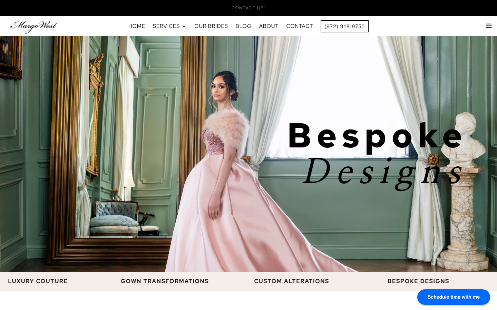

The Transformation
Before & After
Same business, completely different impression. The redesign positions Margo West as the couture atelier she is.

Before: Generic Divi Template

After: Luxury Design Atelier
How we transformed Margo West Bridal Couture's web presence to match 40 years of couture craftsmanship.
Same business, completely different impression. The redesign positions Margo West as the couture atelier she is.

Margo West has been a fixture in Dallas bridal couture since 1984. But their website told a different story. Built on a standard Divi template, it looked like every other bridal boutique online.
We rejected every bridal website cliche. No white backgrounds. No stock roses. Instead, a site that feels like walking into a couture atelier.
Deep green and navy with gold typography. In a sea of white bridal websites, Margo West stands out instantly.
Macro photography of actual couture beadwork replaces generic model shots. Visitors feel the craftsmanship.
"We do the alterations other designers won't" leads with capability, not inventory.
The founder's 40-year journey is front and center. Trust earned through decades, not marketing.
Every technical decision optimized for speed, security, and ease of management.
See what Local Howl can do for your business. Get a free audit and discover your growth potential.
Request A FREE AUDITSee Plans